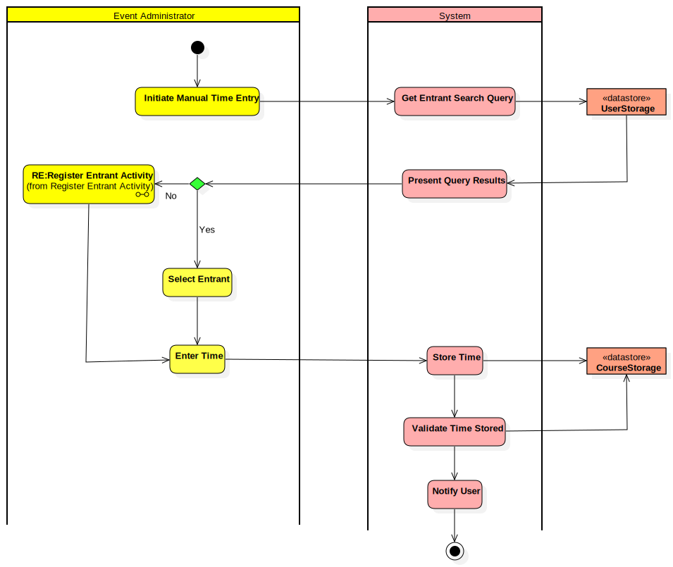

Record Manual Time
UMLActivity
Aria Orienteering
::
Use Case Model
::
Record Manual Entrants Time
::
Record Manual Time
Description
The Actor is the Event Adminstrator: assumed that the entrant is already stored in system.
Diagrams

Record Manual Time Diagram
Groups
Event Administrator
System
Nodes
InitialNode1
Initiate Manual Time Entry
Get Entrant Search Query
UserStorage
Present Query Results
Select Entrant
Enter Time
Store Time
Validate Time Stored
Notify User
ActivityFinalNode1
Entrant Displayed
RE
CourseStorage
Edges
(Initiate Manual Time Entry→Get Entrant Search Query)
(Get Entrant Search Query→UserStorage)
(UserStorage→Present Query Results)
(Select Entrant→Enter Time)
(Enter Time→Store Time)
(Store Time→Validate Time Stored)
(Validate Time Stored→Notify User)
(Notify User→ActivityFinalNode1)
(Store Time→UserStorage)
(Validate Time Stored→UserStorage)
(InitialNode1→Initiate Manual Time Entry)
Yes (Entrant Displayed→Select Entrant)
No (Entrant Displayed→RE)
(Present Query Results→Entrant Displayed)
(RE→Enter Time)
(Store Time→CourseStorage)
(Validate Time Stored→CourseStorage)
Properties
Name
Value
name
Record Manual Time
stereotype
null
visibility
public
isReentrant
true
isReadOnly
false
isSingleExecution
false
Owned Elements
Record Manual Time Diagram